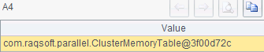
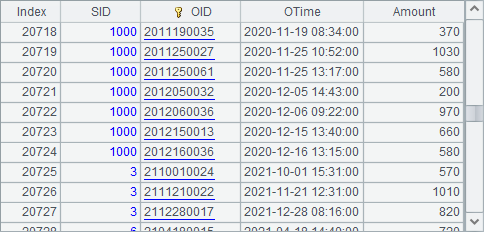

11.7.2 Pseudo table merge
Usually, file data is stored and used by user, such as the orders records stored by salespeople in the previous section. We can define a user field for the future pseudo table, by which a merge or group operation will be performed at data retrieval or grouping. For example:
|
|
A |
|
1 |
=create(file,user).record([["pseudo/orders2020.ctx","pseudo/orders2021.ctx"],"SID"]) |
|
2 |
=pseudo(A1) |
|
3 |
=A2.import() |
|
4 |
=A2.group(year(OTime)).import() |
|
5 |
=A4.new(SID,year(OTime):Year,sum(Amount):Total) |
|
6 |
=A2.groups(SID, year(OTime):Year;sum(Amount):Total) |
A1 generates a pseudo table definition record:

Generally, the desired field under user field is the first field in a data file. A3 imports data from the pseudo table as follows:

This time data is not retrieved according to the original order, but by merging two years¡¯ records of same SID under user field in the pseudo table.
A4 groups the pseudo table by year:

The grouping operation is performed first by user field. Viewing the following results of amount summing operations in A5 based on the grouped pseudo table can make this easy to understand:

We can also use T.groups() function to perform the above grouping and sum operation. Note that this method will not automatically handle user field, and we need to write it explicitly as the grouping field. Here¡¯s A6¡¯s result:

Besides the user field, we can configure a date field in a pseudo table. This field, when multiple files are used to generate a pseudo table, should be aligned to them, but it does not need to be ordered when being considered in each single file. Intervals which date field values are belong to will be recorded for each file at creation of the pseudo table, and used to automatically locate the corresponding file for a query or filter operaion. For example:
|
|
A |
|
1 |
=create(file,user,date).record([["pseudo/orders2020.ctx", "pseudo/orders2021.ctx"],"SID","OTime"]) |
|
2 |
=pseudo(A1) |
|
3 |
=A2.select(OTime>date(2020,12,20) && OTime<date(2021,1,10)) |
|
4 |
=A3.import() |
A1 generates a pseudo table definition record:

A3 queries records of orders whose dates belong to a time period between 2020-12-20 and 2021-01-10. A4 gets the desired records:

Since there is also the user field in the pseudo table, the desired records will be merged by user after they are retrieved from the two data files. If the field isn¡¯t set, the desired records will be returned in their original order.